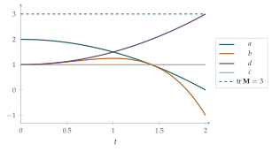

STEP III 2024, 문제 5
다음으로 넘어가기 전에 문제를 먼저 읽어 보자. 이 문제는 OCR에서 내려받을 수 있는 2024년 STEP 문제지 모음(zip 파일)의 STEP III 문제지에 있다: www.ocr.org.uk/Images/725753-2024-past-papers.zip
도입
물리학에서 가장 깊은 사실들 가운데 일부는 보존 법칙(conservation laws)이다. 운동이 아무리 복잡해도 에너지, 운동량, 각운동량은 변하지 않는다. 계에 보존량이 충분히 많으면 그 운동을 정확히 풀 수 있고, 너무 적으면 운동이 혼돈적일 수 있다.
이 문제는 보존량을 만들어 내는 놀라운 방법을 보여 준다. 행렬이 시간에 따라 \(\frac{\mathrm{d}\mathbf{M}}{\mathrm{d}t} = \mathbf{MN} - \mathbf{NM}\)에 따라 변하면, 성분들이 아무리 크게 요동쳐도 대각합(trace)과 행렬식(determinant), 따라서 고유값(eigenvalues)은 결코 변하지 않는다. 이러한 쌍 \((\mathbf{M}, \mathbf{N})\)을 랙스 쌍(Lax pair)이라 한다. 이 이름은 피터 랙스(Peter Lax)에게서 왔는데, 그는 서로를 통과한 뒤에도 모양이 변하지 않는 고립파인 솔리톤(solitons)의 놀라운 성질을 설명하기 위해 1968년에 이 아이디어를 도입하였다.
시작하기 전에
식 \(\mathbf{MN} - \mathbf{NM}\)을 \(\mathbf{M}\)과 \(\mathbf{N}\)의 교환자(commutator)라 한다. 이것은 언제 \(0\)이 되는가? 소문항 (i)을 이용하면 그 대각합은 얼마인가?
교환자는 \(\mathbf{M}\)과 \(\mathbf{N}\)이 교환 가능할 때, 그리고 그때에만 \(0\)이다. 또 소문항 (i)에 의해 그 대각합은 언제나 \(\operatorname{tr}(\mathbf{MN}) - \operatorname{tr}(\mathbf{NM}) = 0\)이다. 이 하나의 사실이 이 문제에 나오는 모든 보존 법칙의 출발점이다.
차근차근 풀기
단계 1 대각합
\(\mathbf{M} = \begin{pmatrix} a & b \\ c & d \end{pmatrix}\), \(\mathbf{N} = \begin{pmatrix} p & q \\ r & s \end{pmatrix}\)라 하면 \(\mathbf{MN}\)의 대각 성분은 \(ap + br\)와 \(cq + ds\)이므로 \(\operatorname{tr}(\mathbf{MN}) = ap + br + cq + ds\)이다. \(\mathbf{M}\)과 \(\mathbf{N}\)의 역할을 바꾸면 \(pa + qc + rb + sd\)가 되어 같은 값이다. \(\operatorname{tr}(\mathbf{M} + \mathbf{N}) = \operatorname{tr}\mathbf{M} + \operatorname{tr}\mathbf{N}\)임은 분명하다.■
단계 2 행렬식의 도함수
곱의 미분법(product rule)으로 \(\det\mathbf{M} = ad - bc\)를 미분하여라. 그다음 \(\mathbf{M}^{-1} = \frac{1}{\det\mathbf{M}}\begin{pmatrix} d & -b \\ -c & a \end{pmatrix}\)를 이용하여 \(\mathbf{M}^{-1}\frac{\mathrm{d}\mathbf{M}}{\mathrm{d}t}\)와 그 대각합을 계산하여라.
도함수를 점으로 나타내면 \(\frac{\mathrm{d}}{\mathrm{d}t}\det\mathbf{M} = \dot ad + a\dot d - \dot bc - b\dot c\)이다. 또 \[\mathbf{M}^{-1}\dot{\mathbf{M}} = \frac{1}{\det\mathbf{M}}\begin{pmatrix} d & -b \\ -c & a \end{pmatrix}\begin{pmatrix} \dot a & \dot b \\ \dot c & \dot d \end{pmatrix}\] 의 대각 성분은 \(\frac{d\dot a - b\dot c}{\det\mathbf{M}}\)와 \(\frac{-c\dot b + a\dot d}{\det\mathbf{M}}\)이다. 이 둘의 합은 \(\frac{1}{\det\mathbf{M}}\frac{\mathrm{d}}{\mathrm{d}t}\det\mathbf{M}\)이다.■
단계 3 세 가지 보존량
\(\dot{\mathbf{M}} = \mathbf{MN} - \mathbf{NM}\)의 대각합을 구하여라. 행렬식에 대해서는 소문항 (ii)를 이용하여라. \(\mathbf{M}^{-1}(\mathbf{MN} - \mathbf{NM})\)은 무엇인가?
대각합: \(\frac{\mathrm{d}}{\mathrm{d}t}\operatorname{tr}\mathbf{M} = \operatorname{tr}\dot{\mathbf{M}} = \operatorname{tr}(\mathbf{MN}) - \operatorname{tr}(\mathbf{NM}) = 0\).
행렬식: 소문항 (ii)에 의해 \[\frac{1}{\det\mathbf{M}}\frac{\mathrm{d}}{\mathrm{d}t}\det\mathbf{M} = \operatorname{tr}\bigl(\mathbf{M}^{-1}(\mathbf{MN} - \mathbf{NM})\bigr) = \operatorname{tr}\mathbf{N} - \operatorname{tr}(\mathbf{M}^{-1}\mathbf{NM}) = \operatorname{tr}\mathbf{N} - \operatorname{tr}\mathbf{N} = 0,\] 이다. 여기서 소문항 (i)을 \(\operatorname{tr}\bigl(\mathbf{M}^{-1}(\mathbf{NM})\bigr) = \operatorname{tr}\bigl((\mathbf{NM})\mathbf{M}^{-1}\bigr) = \operatorname{tr}\mathbf{N}\)의 꼴로 이용하였다.
제곱의 대각합: \(\operatorname{tr}(\mathbf{M}^2) = (\operatorname{tr}\mathbf{M})^2 - 2\det\mathbf{M}\)이고(7.4 절 참고), 두 항이 모두 상수이므로 이 값도 상수이다.■
단계 4 명시적인 해
\(\mathbf{E} = \begin{pmatrix} 0 & 1 \\ 0 & 0 \end{pmatrix}\)일 때 \(\mathbf{N} = t\mathbf{I} + t\mathbf{E}\)로 놓고 \(\mathbf{MN} - \mathbf{NM}\)을 계산한 다음, \(a\), \(b\), \(c\), \(d\)에 대한 미분방정식(differential equations)을 써라. 이를 \(c\), 그다음 \(a\)와 \(d\), 그다음 \(b\)의 순서로 풀어라.
\(t\mathbf{I}\) 부분은 모든 행렬과 교환 가능하므로 \(\mathbf{MN} - \mathbf{NM} = t(\mathbf{ME} - \mathbf{EM})\)이다. 이제 \(\mathbf{ME} = \begin{pmatrix} 0 & a \\ 0 & c \end{pmatrix}\), \(\mathbf{EM} = \begin{pmatrix} c & d \\ 0 & 0 \end{pmatrix}\)이므로 \[\dot a = -tc, \qquad \dot b = t(a - d), \qquad \dot c = 0, \qquad \dot d = tc.\] 따라서 \(c = C\)는 상수이다. 그러면 \(a = A - \frac12Ct^2\), \(d = D + \frac12Ct^2\)이고, 이어서 \(\dot b = t(A - D - Ct^2)\)이므로 \(b = B + \frac12(A - D)t^2 - \frac14Ct^4\)이다. 그러므로 \[\mathbf{M} = \begin{pmatrix} A - \frac12Ct^2 & B + \frac12(A - D)t^2 - \frac14Ct^4 \\[0.5ex] C & D + \frac12Ct^2 \end{pmatrix}. \qed\] 확인: 대각합은 \(A + D\)이고, 행렬식은 \((A - \frac12Ct^2)(D + \frac12Ct^2) - C\bigl(B + \frac12(A - D)t^2 - \frac14Ct^4\bigr) = AD - BC\)로, 예상대로 상수이다(그림 7.7.1).
단계 5 다른 방정식
\(\dot{\mathbf{M}} = \mathbf{MN}\)이면 \(\mathbf{N} = \mathbf{M}^{-1}\dot{\mathbf{M}}\)이고, 소문항 (ii)에 의해 \(\operatorname{tr}\mathbf{N}\)은 \(\det\mathbf{M}\)의 로그 도함수(logarithmic derivative)이다. \(\mathbf{M}\)의 행렬식은 변하면서 대각합은 일정하게 유지될 수 있는가?
물론 가능하다. \(|t| < 1\)에 대하여 \(\mathbf{M} = \begin{pmatrix} 1 & t \\ t & 1 \end{pmatrix}\)로 놓자(이때 \(\det\mathbf{M} = 1 - t^2 \neq 0\)). 그 대각합은 항상 \(2\)이다. \(\mathbf{N} = \mathbf{M}^{-1}\dot{\mathbf{M}}\)으로 정의하면 \(\dot{\mathbf{M}} = \mathbf{MN}\)이고 \[\mathbf{N} = \frac{1}{1 - t^2}\begin{pmatrix} 1 & -t \\ -t & 1 \end{pmatrix}\begin{pmatrix} 0 & 1 \\ 1 & 0 \end{pmatrix} = \frac{1}{1 - t^2}\begin{pmatrix} -t & 1 \\ 1 & -t \end{pmatrix},\] 이다. 이 행렬은 정칙(non-singular)이고, \(t \neq 0\)일 때 \(\operatorname{tr}\mathbf{N} = \frac{-2t}{1 - t^2} \neq 0\)이다. 따라서 답은 아니다. \(\operatorname{tr}\mathbf{N}\)이 반드시 \(0\)일 필요는 없다.■

돌아보기
교환자의 대각합은 \(0\)이다. \(\operatorname{tr}(\mathbf{MN}) = \operatorname{tr}(\mathbf{NM})\)으로부터 모든 보존 법칙이 따라 나왔다.
로그 도함수. 소문항 (ii)는 행렬식의 도함수를 대각합으로 바꾸어 주었는데, 대각합은 선형이어서 다루기 쉽다.
명시적인 해에서 보존을 확인한다. \(\mathbf{M}(t)\)의 식은 그 대각합과 행렬식이 상수임을 확인하는 방법으로 검산하였다.
숨은 수학
1834년 스코틀랜드의 공학자 John Scott Russell은 에든버러 근처의 유니언 운하(Union Canal)를 따라 나아가는 고립파 하나를 말을 타고 1마일 넘게 쫓아갔는데, 그 파동은 모양을 잃지 않았다. 이러한 파동은 코르테베흐-드프리스(Korteweg–de Vries, KdV) 방정식으로 기술되며, 1960년대에 Norman Zabusky와 Martin Kruskal의 컴퓨터 실험은 이러한 “솔리톤” 두 개가 마치 입자처럼 충돌한 뒤에도 변하지 않은 채로 빠져나올 수 있음을 보여 주었다. 이를 설명하려면 무한히 많은 보존량이 필요했다. 피터 랙스는 1968년에 KdV 방정식을 한 쌍의 미분 연산자(differential operators) \(L\)과 \(P\)에 대하여 \(\dot L = LP - PL\)로 쓸 수 있음을 보였다. 그러면 이 문제에서와 똑같이 \(L\)의 고유값이 보존되고, 이 고유값들이 무한히 많은 보존 법칙을 준다. 랙스 쌍을 갖는 계를 적분가능계(integrable)라 하며, 이들은 정확히 풀 수 있는 몇 안 되는 비선형(nonlinear) 계에 속한다.
등스펙트럼 흐름
\(\mathbf{M}\)의 대각합과 행렬식이 그 특성다항식(characteristic polynomial) \(\lambda^2 - (\operatorname{tr}\mathbf{M})\lambda + \det\mathbf{M}\)을 결정하므로, \(\mathbf{M}\)의 고유값은 시간에 따라 변하지 않는다. 흐름 \(\dot{\mathbf{M}} = [\mathbf{M}, \mathbf{N}]\)은 \(\mathbf{M}\)을 고유값이 고정된 행렬들의 집합 안에서 움직인다. 실제로 해는 언제나 어떤 가역(invertible) 행렬 \(\mathbf{S}(t)\)에 대하여 \(\mathbf{M}(t) = \mathbf{S}(t)^{-1}\mathbf{M}(0)\mathbf{S}(t)\)의 꼴이다. 즉 행렬은 처음 값과 계속 닮음(similar)이다. 같은 아이디어가 물리학 전반에 흐른다. 양자역학에서 관측가능량 \(\mathbf{A}\)는 \(\frac{\mathrm{d}\mathbf{A}}{\mathrm{d}t} = \frac{\mathrm{i}}{\hbar}[\mathbf{H}, \mathbf{A}]\)에 따라 변하는데, 여기서 \(\mathbf{H}\)는 에너지이므로 에너지와 교환 가능한 것은 무엇이든 보존된다.
야코비 공식
소문항 (ii)는 임의의 크기의 가역행렬에 대하여 성립하며, 이를 야코비(Jacobi) 공식(Jacobi’s formula)이라 한다. \(\det\mathbf{M}\)이 음수일 수도 있으므로 로그 없이 \(\frac{\mathrm{d}}{\mathrm{d}t}\det\mathbf{M} = \det\mathbf{M}\,\operatorname{tr}\bigl(\mathbf{M}^{-1}\dot{\mathbf{M}}\bigr)\)로 쓰는 것이 가장 안전하다. 로그 꼴 \(\frac{\mathrm{d}}{\mathrm{d}t}\ln\det\mathbf{M} = \operatorname{tr}\bigl(\mathbf{M}^{-1}\dot{\mathbf{M}}\bigr)\)은 \(\det\mathbf{M} > 0\)이어야 한다(일반적으로는 \(\ln|\det\mathbf{M}|\)을 쓴다). 그 결과 하나로, 상수 행렬 \(\mathbf{A}\)에 대하여 \(\dot{\mathbf{M}} = \mathbf{AM}\)이면 \(\det\mathbf{M}(t) = e^{t\operatorname{tr}\mathbf{A}}\det\mathbf{M}(0)\)이다. 미분방정식 연구에서 이것은 위상 공간(phase space)의 부피가 어떻게 늘어나거나 줄어드는지 알려 준다. 고전역학의 방정식에서는 대각합이 \(0\)이어서 부피가 보존되는데, 이 결과를 리우빌(Liouville) 정리(Liouville’s theorem)라 한다.
사고 기술
무언가가 변해 갈 때, 그것으로 만든 양 가운데 일정하게 유지되는 것을 찾아라. 그러한 양은 운동을 제약하고, 종종 그 구조를 드러낸다.
여기서는 변화율이 교환자였기 때문에 대각합과 행렬식이 보존되었다. 역학에서 보존량은 대칭성에서 나오며(뇌터(Noether) 정리(Noether’s theorem)), 이를 찾는 것이 종종 문제를 푸는 첫걸음이 된다.
더 도전하기
해를 확인하기. 단계 4의 행렬 \(\mathbf{M}(t)\)가 \(\dot{\mathbf{M}} = \mathbf{MN} - \mathbf{NM}\)을 만족함을 미분하여 확인하여라.
닮음. \(\mathbf{M}_0\)이 상수이고 \(\mathbf{S}(t)\)가 \(\dot{\mathbf{S}} = \mathbf{SN}\)을 만족할 때 \(\mathbf{M}(t) = \mathbf{S}^{-1}\mathbf{M}_0\mathbf{S}\)이면 \(\dot{\mathbf{M}} = \mathbf{MN} - \mathbf{NM}\)임을 보여라. (힌트: \(\frac{\mathrm{d}}{\mathrm{d}t}\mathbf{S}^{-1} = -\mathbf{S}^{-1}\dot{\mathbf{S}}\mathbf{S}^{-1}\).)
부피의 증가. \(\mathbf{M}(t) = \begin{pmatrix} e^{2t} & 0 \\ 0 & e^{-t} \end{pmatrix}\)라 하자. \(\dot{\mathbf{M}} = \mathbf{MN}\)을 만족하는 \(\mathbf{N}\)을 구하고, \(\frac{\mathrm{d}}{\mathrm{d}t}\ln\det\mathbf{M} = \operatorname{tr}\mathbf{N}\)임을 확인하여라.
더 높은 거듭제곱. \(\dot{\mathbf{M}} = \mathbf{MN} - \mathbf{NM}\)일 때, 모든 양의 정수 \(k\)에 대하여 \(\frac{\mathrm{d}}{\mathrm{d}t}\operatorname{tr}(\mathbf{M}^k) = 0\)임을 직접 보여라.
더 읽을거리
P. G. Drazin & R. S. Johnson, Solitons: An Introduction (Cambridge University Press). 랙스 쌍을 포함하여 솔리톤을 다루는 대표적인 학부 입문서이다.
Thierry Dauxois & Michel Peyrard, Physics of Solitons (Cambridge University Press). Scott Russell이 본 파동의 이야기가 실려 있다.
Dwight Neuenschwander, Emmy Noether’s Wonderful Theorem (Johns Hopkins University Press). 대칭성이 어떻게 보존 법칙을 낳는지 설명한다.